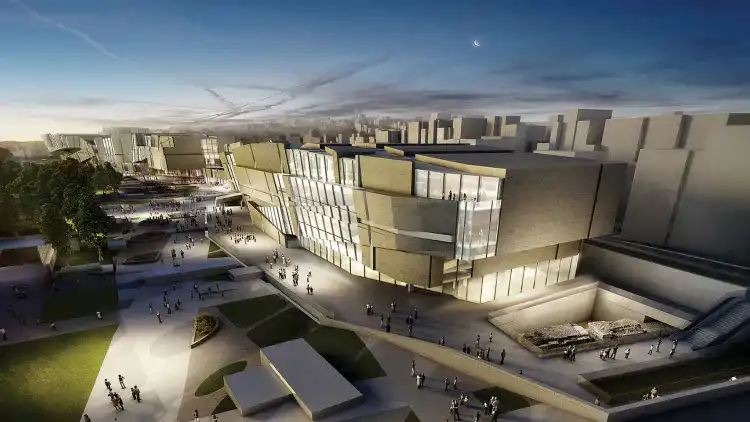

Archéo-Parc Yenikapi
Le Musée Archéologique et Archéo-Parc Yenikapi à Istanbul est une réalisation architecturale remarquable qui abrite des trésors historiques exceptionnels. Conçu pour mettre en valeur les découvertes archéologiques majeures effectuées lors des fouilles du site de Yenikapi, le musée et l'archéo-parc offrent une expérience immersive qui remonte à l'époque byzantine. L'architecture du Musée Archéologique et Archéo-Parc Yenikapi est conçue de manière à s'intégrer harmonieusement au site archéologique. Les bâtiments modernes se fondent dans le paysage historique, créant une symbiose visuelle qui respecte le contexte historique tout en offrant une expérience contemporaine.
Le musée expose les découvertes majeures de Yenikapi, notamment des bateaux en bois byzantins étonnamment bien conservés, des artefacts, et des vestiges datant de plusieurs siècles. L'architecture intérieure du musée est conçue pour offrir une mise en scène spectaculaire de ces découvertes, créant un dialogue visuel entre le passé et le présent.Les espaces d'exposition du musée incorporent des éléments architecturaux modernes pour mettre en valeur les artefacts anciens. Des jeux de lumière sophistiqués et des designs d'exposition innovants guident les visiteurs à travers une chronologie captivante de l'histoire de la région.